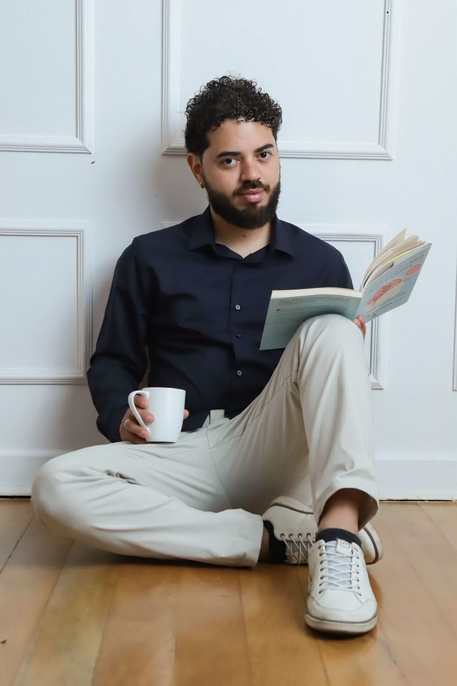
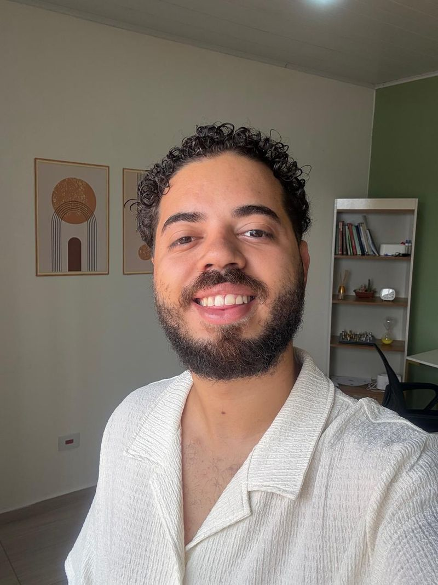
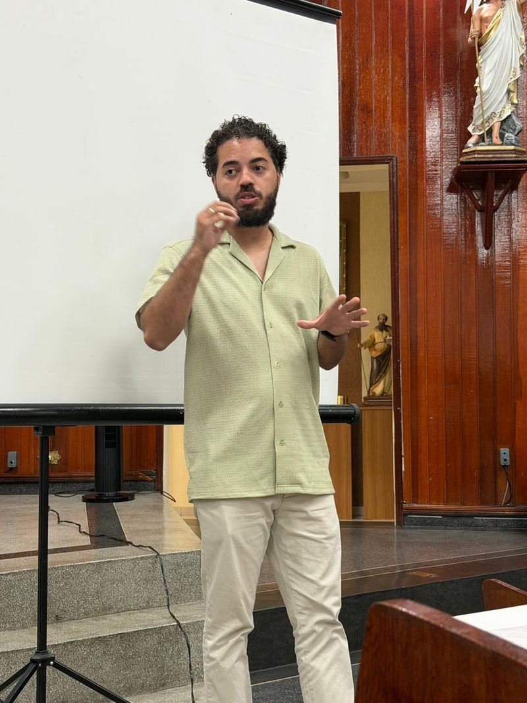

Relação amorosa
Namoro, casamento, término, ciúme, dependência emocional, comunicação no casal e a escolha de parceiros.
Psicólogo clínico e do esporte
Terapia para quem quer entender seus padrões nos relacionamentos e acompanhamento psicológico para atletas de todas as modalidades que querem render sem se perder no caminho.

Talvez você se reconheça
Você repete o mesmo tipo de relação, mesmo sabendo como termina.
Tem medo de ser abandonado ou de não ser suficiente.
Evita conflitos e acaba guardando tudo para si.
Sente que se doa muito e recebe pouco de volta.
As discussões em família ou no casal sempre giram no mesmo ponto.
Tem dificuldade de dizer não, colocar limites ou pedir o que precisa.
Esses padrões têm história. Na terapia, a gente entende de onde vêm e constrói outras formas de se relacionar.
Como posso ajudar
Relacionamento é qualquer laço que importa para você. Cada um deles diz algo sobre como você aprendeu a se conectar.
Namoro, casamento, término, ciúme, dependência emocional, comunicação no casal e a escolha de parceiros.
Relação com pais, irmãos e filhos, cobranças, papéis que você carrega e limites dentro de casa.
Solidão, dificuldade de se aproximar, medo de rejeição e amizades que mais cansam do que acolhem.
Conflitos com chefia e colegas, dificuldade de se posicionar e a sensação de nunca ser reconhecido.
Autoestima, autoconhecimento e autodesenvolvimento. A base de todas as outras relações.
Psicologia do esporte
Acompanhamento no consultório para atletas de todas as modalidades. Trabalhamos o que acontece por dentro antes, durante e depois da competição.
Nervosismo que trava, insônia antes do jogo e o corpo que não responde na hora.
Voltar a acreditar no próprio jogo depois de erros, derrotas ou fases ruins.
Ficar no presente e não se perder no placar, na torcida ou no erro anterior.
Expectativa de técnico, família, patrocínio e a cobrança mais dura: a sua.
Conflitos no grupo, comunicação e o lugar que você ocupa no time.
Afastamento, retorno, troca de categoria ou de clube, e decisões de carreira.
Do treino ao dia da prova, a preparação mental também é treino.
Agendar como atletaModalidades
Consultório reservado em Cotia, para quem prefere o encontro cara a cara e um espaço só para você.
Sessões por videochamada, com o mesmo cuidado e sigilo. Ideal para rotinas corridas ou para quem mora longe.
Como começar
Fale comigo pelo WhatsApp. Eu mesmo respondo.
Não precisa ter tudo organizado. Uma frase já basta para começar.
Vemos juntos o melhor dia e se prefere presencial ou online.
As sessões duram cerca de 50 minutos.


Sobre mim
Sou psicólogo clínico e do esporte. Meu trabalho gira em torno de uma pergunta: como você se conecta com as pessoas, consigo mesmo e com aquilo que faz?
Acredito que a maior parte do que nos faz sofrer passa por vínculos. A forma como aprendemos a amar, a confiar, a pedir ajuda e a colocar limites. Na terapia, olhamos para isso com calma, sem julgamento, para que você possa escolher relações mais saudáveis em vez de só repetir o que conhece.
No esporte, levo esse mesmo olhar para os atletas. Desempenho não acontece no vácuo: passa pela confiança, pela pressão que vem de fora e pela relação com técnico, equipe e família.
Atendo presencialmente em Cotia/SP e online para todo o Brasil.
Dúvidas frequentes
Não. Trabalho com todos os tipos de vínculo: família, amizades, trabalho e principalmente a relação com você mesmo.
De todas. Futebol, lutas, corrida, natação, esportes de quadra e qualquer outra. O trabalho se adapta à rotina e às demandas de cada esporte.
Sim. O atendimento online tem o mesmo cuidado e sigilo do presencial e atende pessoas de qualquer lugar do Brasil.
Cerca de 50 minutos.
Geralmente semanais. A frequência é combinada de acordo com o seu momento.
Pelo WhatsApp (11) 94227-8921. É só mandar uma mensagem.
Se quiser começar ou só tirar uma dúvida, me chame. Responder uma mensagem já é um primeiro passo.
Falar no WhatsApp